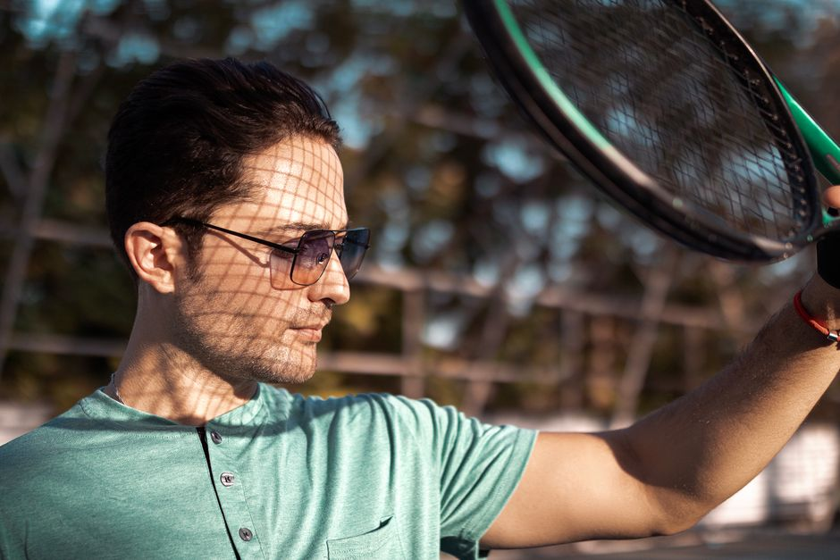
Gafas deportivas con lentes de espejo degradadas para tenis y deportes de raqueta
Gafas deportivas con lentes espejo degradadas. Protección UV y estilo para tenis y deportes de raqueta. Diseño moderno y funcional.
0 vistas
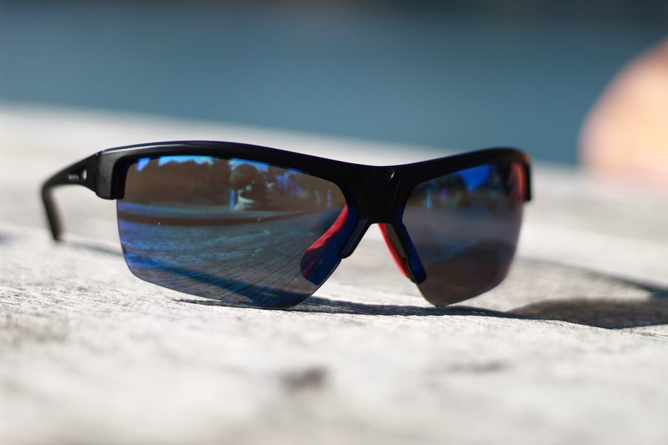
Gafas deportivas con lentes graduadas y protección uv para natación y deportes acuáticos en piscina
Gafas deportivas graduadas para natación con protección UV. Ve claro en el agua sin compromisos. Perfectas para piscina y deportes acuáticos.
0 vistas
Gafas deportivas con lentes de espejo polarizadas para ciclismo en carretera y triatlón
Gafas deportivas con lentes espejo polarizadas. Protección UV y anti-reflejo para ciclismo en carretera y triatlón. Máxima claridad visual.
0 vistas
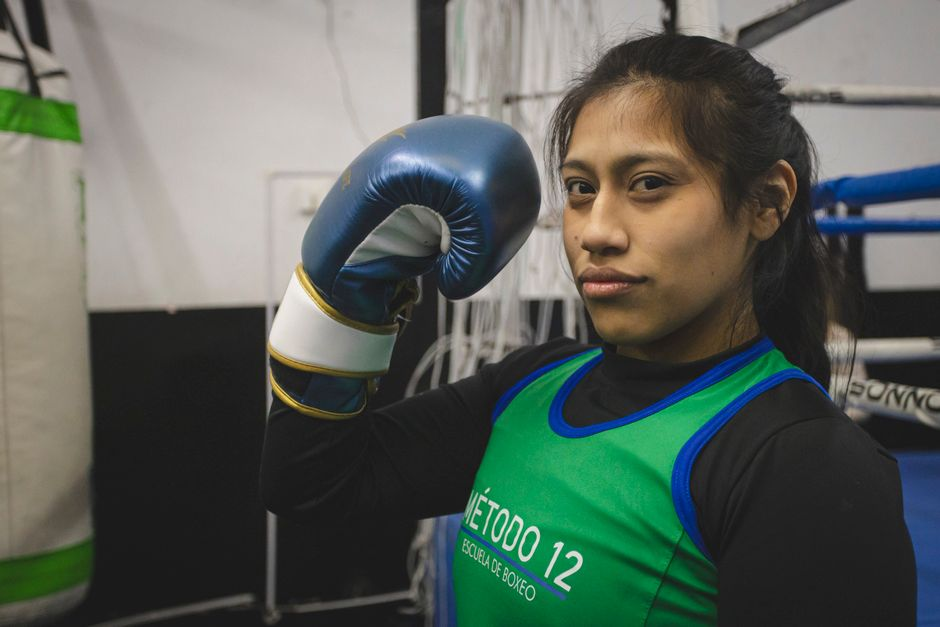
Gafas deportivas con lentes espejadas de espectro completo para boxeo y deportes de combate
Gafas deportivas con lentes espejadas de espectro completo. Protección visual y visibilidad clara para boxeo, kickboxing y deportes de combate.
0 vistas
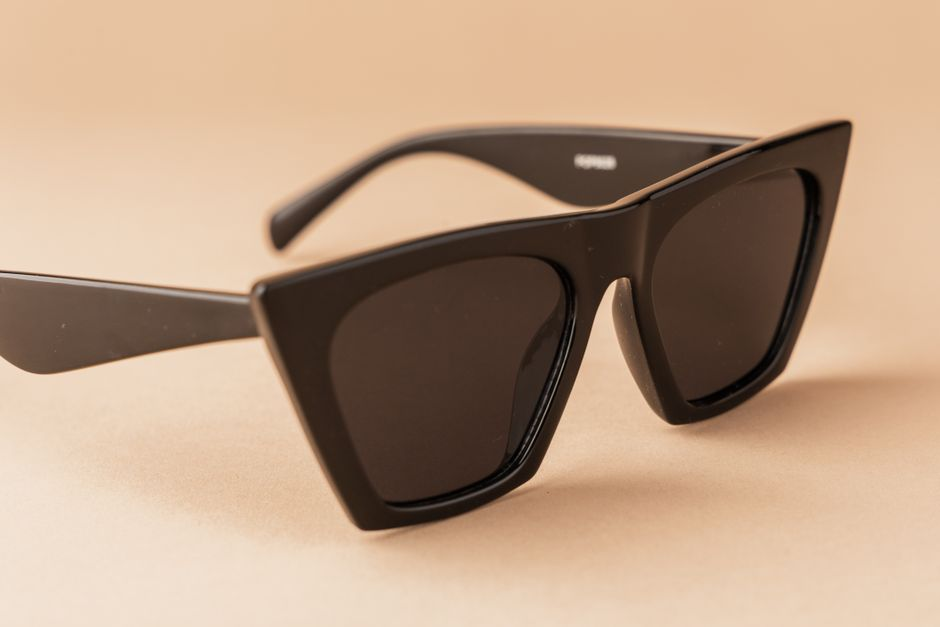
Gafas de sol deportivas con lentes espejadas y protección uv para skateboarding y deportes urbanos de acción
Gafas de sol deportivas con protección UV y lentes espejadas. Ideales para skateboarding, BMX y deportes de acción urbanos. Estilo y seguridad.
0 vistas

Gafas deportivas con lentes espejadas de espectro completo para golf y deportes de precisión en exteriores
Gafas deportivas con lentes espejadas de espectro completo. Protección UV y claridad perfecta para golf, tiro con arco y deportes de precisión.
0 vistas
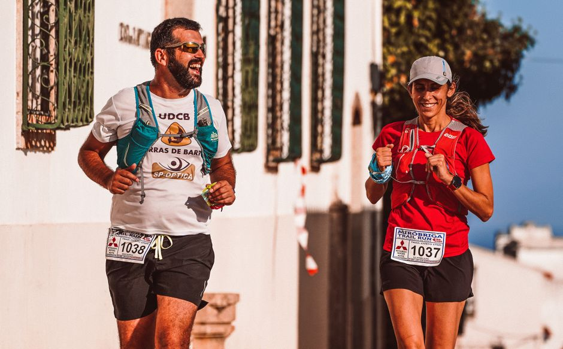
Gafas deportivas con lentes intercambiables de espejo para trail running y deportes de montaña
Gafas deportivas con lentes de espejo intercambiables para trail running. Adaptables a cualquier luz y terreno. Comodidad y protección garantizada.
0 vistas
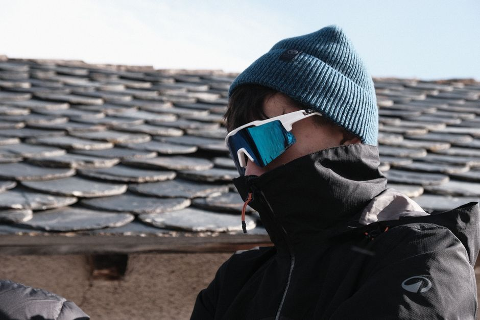
Gafas deportivas con lentes fotocromáticas para esquí y snowboard
Gafas con lentes fotocromáticas que se adaptan automáticamente a la luz. Perfectas para esquí y snowboard. Visión clara en cualquier condición.
0 vistas
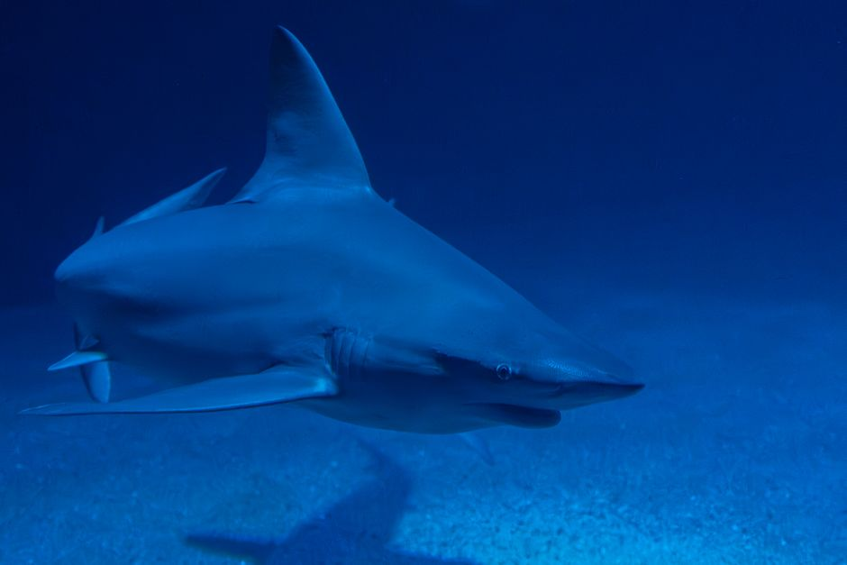
Gafas deportivas polarizadas con lentes graduadas para pesca y deportes acuáticos
Gafas deportivas polarizadas con lentes graduados. Elimina reflejos en pesca, esquí acuático y paddleboarding. Visión clara y protección UV.
0 vistas
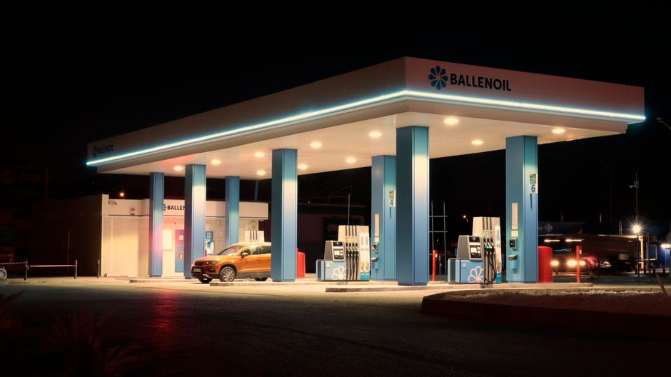
Gafas deportivas con lentes amarillas de contraste para ciclismo nocturno y visibilidad en baja luminosidad
Gafas deportivas con lentes amarillas para ciclismo nocturno. Mejora tu visión en baja luminosidad y reduce el brillo. Visibilidad clara garantizada.
0 vistas
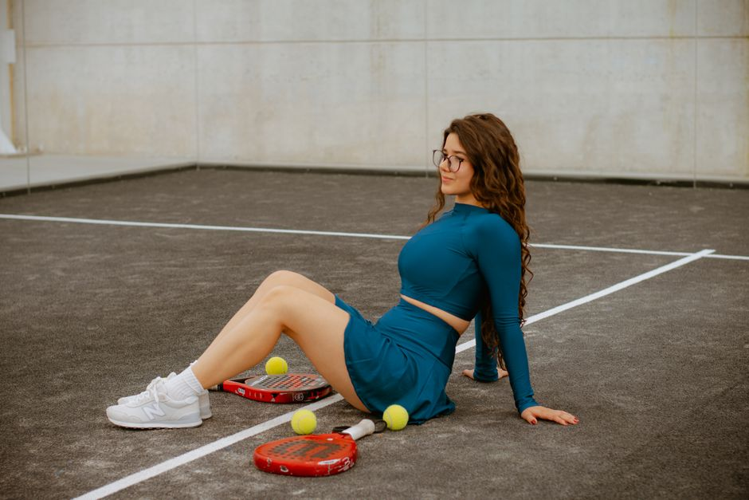
Gafas deportivas con lentes antirreflectantes y protección contra luz azul para deportes en interiores y entrenamientos en gimnasio
Gafas deportivas con protección antirreflectante y filtro de luz azul. Diseño ergonómico para entrenamientos en interiores y gimnasio. Máxima comodidad.
0 vistas
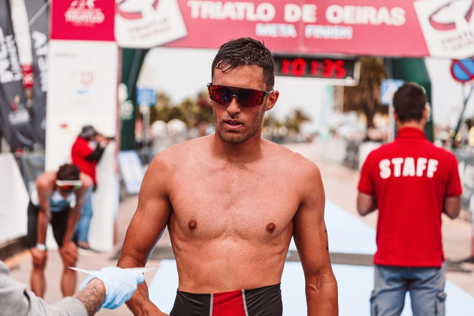
Gafas deportivas con lentes de transición inteligente para natación y triatlón
Gafas con lentes de transición automática para natación y triatlón. Se adaptan a la luz sin cambiar. Rendimiento máximo en agua y tierra.
0 vistas
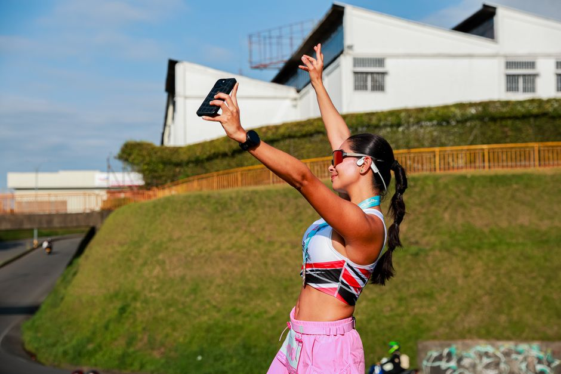
Gafas deportivas con conexión bluetooth y micrófono integrado para ciclismo y running
Gafas deportivas con Bluetooth integrado y micrófono. Llamadas, música y navegación sin soltar el manillar. Perfectas para ciclismo y running.
0 vistas

Gafas de seguridad deportivas con lentes graduadas para ciclismo y running
Gafas de seguridad con lentes graduadas para ciclismo y running. Protección ocular + corrección visual en una sola solución. Descubre nuestras opciones.
0 vistas
Gafas deportivas con lentes de espejo para golf y deportes de precisión al aire libre
Gafas con lentes espejo para golf y deportes de precisión. Reducen deslumbramiento, mejoran contraste y protegen tus ojos al aire libre.
0 vistas
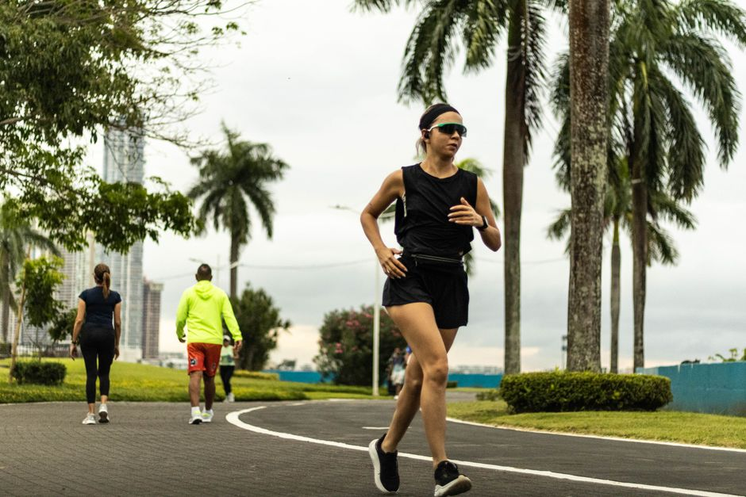
Gafas de sol con lentes intercambiables para trail running y deportes de montaña
Gafas de sol con lentes intercambiables para trail running. Adapta tu visión a cualquier condición de luz en la montaña. Protección y versatilidad garantizada.
0 vistas
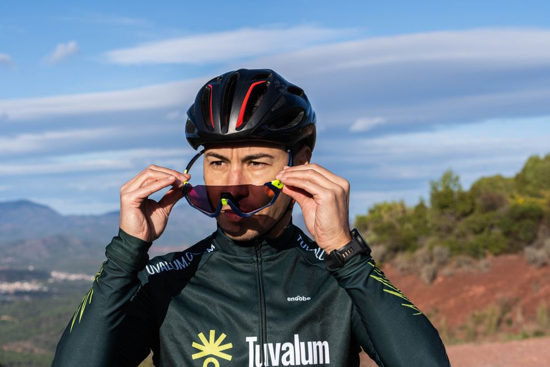
Gafas deportivas con cristales fotocromáticos para ciclismo de montaña
Gafas deportivas con cristales fotocromáticos que se adaptan automáticamente a la luz. Perfectas para ciclismo de montaña. ¡Descubre la comodidad!
0 vistas
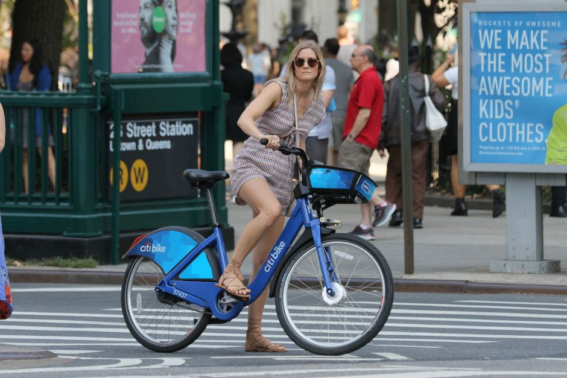
Gafas de sol polarizadas con protección uv400 para deportes acuáticos
Gafas de sol polarizadas con protección UV400 ideales para surf, natación y navegación. Elimina reflejos y mejora tu visión en el agua.
0 vistas